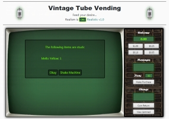
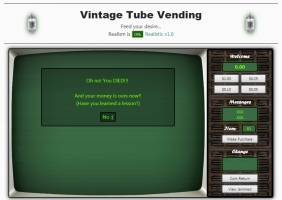
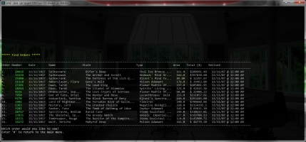
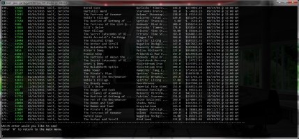
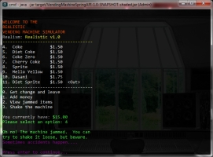
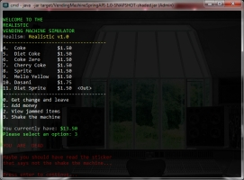

One Final Note is a music themed blog and is the result of a final capstone group project
at The Software Guild, built by a team of three. The app was designed around a spec sheet
from an imaginary customer
who wanted a personal blog website. An interesting characteristic of the site is an
ability to expand itself at the owners discretion. A static page feature is built in
which allows the owner to write new pages for the site without writing any HTML code,
and add them to the normal structure. A WYSWIG editor called Froala was used to accomplish
this. Froala generates HTML code, which is stored along with relevant information in the
database. The pages are then generated and served upon request for the front end. All posts
and pages have states of published and unpublished, allowing for flexible editing and timed
posts.
Spring security is employed to provide 4 access levels to serve the owner and site admins.
A lower level role allows anyone visiting the site to create an account so they can participate
in comments on all the blog posts. Comments can be moderated by site admins. A role management
panel allows admins and owners to manage all users and adjust their roles or disable them.
Because Spring security was a requirement, the app was built largely on a JSP/JSTL framework,
with accompanying javascript for smooth front end functionality. All data is stored on a
MySQL server and is managed through a standard MVC java app using Spring/JDBC.
A MySQL database driven web app created for citizens to report sightings of superheroes.
Various information is tracked including lists of organizations (i.e., Avengers),
superpowers, locations, headquarters, and more. The app is a full fledged CRUD system
that allows users to create, edit and update a carefully built database.
Data was originally generated by hand research, and a vast 2000+ data point collection
of sightings and locations was generated randomly. All locations are real world coordinates,
and the home screen shows the geo-location of the most recent sightings.
The app was built using Spring-boot and runs as a standalone servlet REST controller. The
front end is completely de-coupled, and runs as a plain website on a tomcat server. Communiction
flows between the front end, REST controller, and database quickly and smoothly. Since the app
was built with this flexible design in mind, the option for a mobile front end is plausible.
 
Lost world vending is a vending machine simulator based on java, spring-jsp/jstl, and
a mysql back end. The app is themed as a dystopian, fallout-style machine to give the
user a sense of nostalgia and mystery. There are 9 menu items to choose from. You can
enable realism mode (if you dare) for some frustrating outcomes and the chance to shake
the machine!
The app consists of a standard MVC profile and was adapted from a simple console version
to a richer web experience using Spring and was deployed as a standard tomcat web app.
Since browser compatibility was not a concern during this project, Chrome or safari are
recommended for the best viewing experience.
 
An imaginary flooring company has been tasked with providing a wide range of flooring
options in a fantasy world. The data set in this demonstration consists of 13000+ orders
spanning a wide range of details.
The implementation is java via standard Spring MVC/AOP structure, with a pure file IO back end.
Orders are stored on a file-per-day basis (as defined in the spec). A safe data scheme is employed
wherein each order is copied to a subdirectory before changes are made. If the changes are verified,
the old file is removed. Otherwise, the original file is restored intact and the app lets the user know.
Use 13thFloor-BlackWhite.exe if running on windows, since the windows console does not support
ANSI color codes. Please make sure to expand your console window once the program launches,
since the search option requires a large width!!! (On windows, a console width of 150 should suffice).
Jar versions (colored and black and white) are provided for linux and mac deployment. Use the color
version where possible for the best experience!
floor13.cfg provides the app with details such as file directory location for the orders and meta data,
and a training mode option that can be enabled. In training mode, all changes to data are retained in
memory for the duration of the run process, but are never persisted to the file base. Please note
that Java 1.8 or later is needed to run this app.
 
The web app version of the vending machine originally started out as a Spring-driven console app.
The underlying codebase is identical, but the the console version uses pure text on the front end
and standard data file storage on the back end. The app also uses AOP/AspectJ logging in order to keep
track of exceptions, jams, and shake/death events.
A logic layer was added on top of the standard service layer to introduce some realism effects
to the machine operation. Specifically, the layer was configured to jam the machine a certain
percentage of time, taking the user's money. The user can see a list of currently jammed items,
as they are stored in memory as unique objects. The user has an option to shake the machine,
which causes a random percentage of stuck items to fall down. The shake operation comes at
a risk, however - the machine may tip over and kill the user! The logic can be configured in
an external file called "logic.cfg".
The inventory was created with an intentional complexity - every single item in the machine
has unique properties, including expiration date and a message for the user. Items are
treated individually and as collections throughout the program. This approach makes it
straightforward to track conditions for specific items. An upside to this is that when
an item gets jammed, it is possible for the user to get back the same item they purchased!
Packaged using maven and wrapped into EXE for windows. Run on the command line, or by
double click on windows!